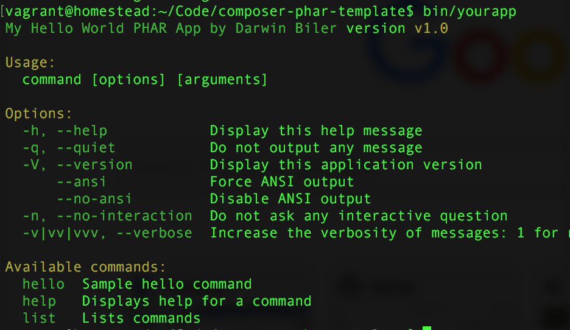

Build your next Console Application Easily!.
 Console applications like
Composer is very convienient to use because all of its dependencies is packaged inside a phar file. You can easily move around the phar file or even remove the filename extension at all, making it looks like a single executable file. Creating PHAR files before though is never easy, and this boilerplate gives you a basic structure and tools to build one.
Features
- Compresses all the dependency files inside the PHAR file. You can then distribute your CLI app in any machine w/o having to use Composer to fetch its dependencies.
- Powered by Symfony Console.
- Support for Eloquent ORM - YES!, you don't need to use Artisan console (not even Laravel ) just to use use Eloquent within your Console Application.
- Easy PHAR file compilation - it just takes one command to put all your source files and depedencies to one phar file : ./build.sh and that is all.
- Easy configuration via .env files. Love the dead simple .env files configuration of Laravel? Yes we have that here!